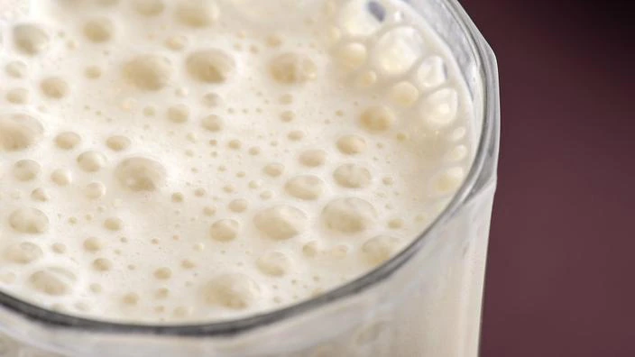

Carbonated Milk

Description
New type of carbonated milk was invented in Karakalpakstan.
Like coke, but with milk!
Ingredients
- Milk - best results with donkey/horse milk, but cow milk is OK too.
- CO2.
- Yeast.
Steps
- Add milk into a container
- Add yeast to milk.
- Let milk sit for a few days in warmth.
- Add CO2 into the milk with a carbonator device for extra bubbles.
- Enjoy with meat dishes.